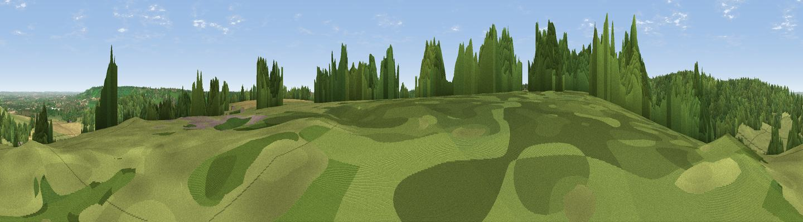

Viewpoint near Radnage
#26766 in England · top 32% of its area beats it · near RadnageWhere it is
The exact computed spot (SU 78175 99425). Click the marker for map links.
The view, rendered

A 360° render of this exact spot computed from the terrain model, tree cover and land cover — summer colours, afternoon light, calibrated against photographs of famous viewpoints. Real trees, hedges and buildings will differ in detail.
The panorama
Grey silhouette: terrain skyline in each direction (720 bearings, Earth curvature and refraction included). Dashed green: skyline with trees (+15 m) and buildings (+8 m) as obstacles. Blue strip: how far the ground is visible on each bearing.
Where the view opens
Wedge length = distance to the farthest visible ground on that bearing (vegetation-aware). Rings at 10, 25 and 50 km.
What fills the view
43% woodland · 41% grassland · 15% cropland · 1% built-up
Angular shares of the visible panorama (visual magnitude), not map area. Landscape diversity 0.46 (0–1 Shannon).
Key numbers
More beautiful places nearby
The staircase of upgrades: each row has a higher view potential than everything closer. Driving times are estimates from straight-line distance, calibrated against real road routing — check an actual route before setting out.
| Place | Direction | Drive | Score |
|---|---|---|---|
| Viewpoint near Chinnor | WNW · 2 km | ~5 min | 71.0 |
| Viewpoint near Chinnor | NW · 2 km | ~5 min | 74.5 |
| Coombe Hill Monument | NE · 10 km | ~19 min | 75.5 |
| Viewpoint near Woolstone | WSW · 50 km | ~71 min | 76.7 |
| Martinsell viewpoint | WSW · 70 km | ~93 min | 77.3 |
| Broadway Hill | WNW · 76 km | ~100 min | 77.7 |
| Viewpoint near Buriton | S · 79 km | ~103 min | 80.0 |
| Beacon Hill | S · 81 km | ~105 min | 85.8 |
51.68815, -0.87052 · source: screening · position refined by local search. Computed location — check access rights before visiting.